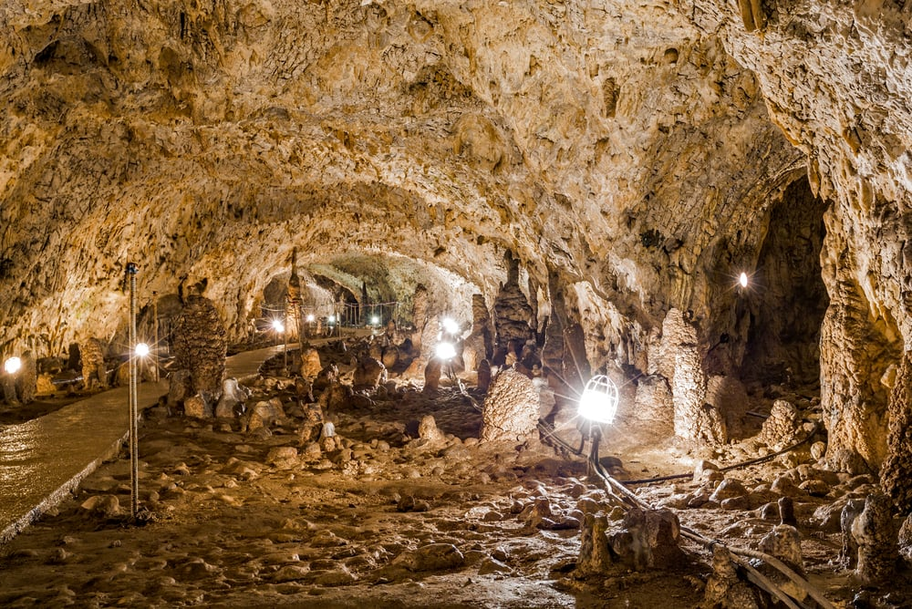

Peștera Muierii

Peștera Muierii se află în comuna Baia de Fier, Județul Gorj, pe teritoriul Depresiunii Getice a Olteniei. Peștera a fost sculptată în calcarele mezozoice de pe marginea sudică a Masivului Parâng, de către râul Galbenul. Cu o istorie foarte bogata, peștera în timpuri străvechi a adăpostit în timpul războaielor, când bărbații plecau la lupte, foarte mulți copii și femei, de unde i se trage și numele. Este prima peșteră electrificată din România.
Peștera are o lungime de aproximativ 7.000 de metri dispusă în 4 niveluri. Nivelul inferior constituie rezervația speologica împartita in doua sectoare: sectorul de nord (1.500m) și sectorul de sud (880m). La 40 de metri inălțime se afla etajul superior amenajat pentru turiști cu o lungime de 573 m, ajunge până la lungimea de 1.228 de metri o rețea de diverticule foarte greu accesibilă,dar se incearca sa se faca astfel incat accesibilitatea sa fie mult mai mare si mai usoara.
Adevaratele atracții ale peșterii sunt Domul Mic, care are un aspect asemănător unei cupole gotice format prin precipitarea milenară a calcitei. Celelalte încăperi sunt Sala Altarului, Valul Altarului, Amvonul, Candelabrul Mare și imaginea Stâncii Însângerate denumită datorită scurgerilor oxidului de fier. În Cupola înaltă de 17 m întâlnim o colonie de lilieci. Ei se hrănesc cu insecte pe care le procură noaptea, înafara peșterii.